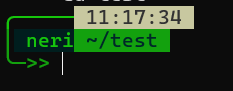

SHELL PROMPT
SHELL PROMPT CUSTOMISATION USING PS1
The special shell variable is used to control the bash prompt. These shell variables are PS1, PS2, PS3, and PS4. Each variable is used for specific purposes. The value of these variables is executed as a command before displaying the primary prompt. The PS1 variable contains the value of the default prompt.
Just take out the terminal and try typing
bash
PS1="hello >> "
Now you might understand how it works.
So If you put this command in your bashrc file, you get this shell prompt forever.
You can have fancy charectors and different colors in your prompt. You can also fetch some information like username, time, current working directory etc as well.
Key Points
- PS1=" "
- replace old PS1 with new one in ~/.bashrc
- \e is used for styling
- [**] helps the bash to calculate the length of PS1
- This should be given to everything which is used for styling [\e*]
Escape sequences and Color Codes
Commonly Used Escape Sequence
| backlash-escaped Character | purpose |
|---|---|
| \u | It is used to display the current username. |
| \h | It is used to the name of the computer name. |
| \H | It is used to the name of the hostname. |
| \d | It is used to display the date with weekday name, month name, and date. |
| \w | It is used to display the full path of the current working directory. |
| \W | It is used to display the last fragment of the current working directory. |
| \t | It is used to display the current time in 24-hour format. |
| \T | It is used to display the current time in 12-hour format. |
| \@ | It is used to display the current time in 12-hour format with AM/PM. |
| \n | JIt is used to add the new line. |
| \e | It is used to add an ASCII escape character. |
| \v | It is used to display the version of the bash. |
| Jill | Smith |
| \V | It is used to display the version of the bash with patch level. |
Graphics Redention Parameter
| n | Name | Note |
|---|---|---|
| 0 | Reset or normal | All attributes off |
| 1 | Bold or increased intensity | As with faint, the color change is a PC (SCO / CGA) invention.[38][better source needed] |
| 2 | Faint, decreased intensity, or dim | May be implemented as a light font weight like bold.[39] |
| 3 | Italic | Not widely supported. Sometimes treated as inverse or blink.[38] |
| 4 | Underline | Style extensions exist for Kitty, VTE, mintty and iTerm2.[40][41] |
| 5 | Slow blink | Sets blinking to less than 150 times per minute |
| 6 | Rapid blink | MS-DOS ANSI.SYS, 150+ per minute; not widely supported |
| 7 | Reverse video or invert | Swap foreground and background colors; inconsistent emulation[42] |
| 8 | Conceal or hide | Not widely supported. |
| 9 | Crossed-out, or strike | Characters legible but marked as if for deletion. Not supported in Terminal.app |
| 10 | Primary (default) font | - |
| 11–19 | Alternative font | Select alternative font n − 10 |
| 20 | Fraktur (Gothic) | Rarely supported |
| 21 | Doubly underlined; or: not bold | Double-underline per ECMA-48,[5]: 8.3.117 but instead disables bold intensity on several terminals, including in the Linux kernel's console before version 4.17. |
| 22 | Normal intensity | Neither bold nor faint; color changes where intensity is implemented as such. |
| 23 | Neither italic, nor blackletter | - |
| 24 | Not underlined | Neither singly nor doubly underlined |
| 25 | Not blinking | Turn blinking off |
| 26 | Proportional spacing | ITU T.61 and T.416, not known to be used on terminals |
| 27 | Not reversed | - |
| 28 | Reveal | Not concealed |
| 29 | Not crossed out | Given in above table |
| 30–37 | Set foreground color | Given in above table |
| 38 | Set foreground color | Next arguments are 5;n or 2;r;g;b |
| 39 | Default foreground color | Implementation defined (according to standard) |
| 40–47 | Set background color | Given in above table |
| 48 | Set background color | Next arguments are 5;n or 2;r;g;b |
| 49 | Default background color | Implementation defined (according to standard) |
| 50 | Disable proportional spacing | T.61 and T.416 |
| 51 | Framed | Implemented as "emoji variation selector" in mintty |
| 52 | Encircled | Implemented as "emoji variation selector" in mintty |
| 53 | Overlined | Not supported in Terminal.app |
| 54 | Neither framed nor encircled | - |
| 55 | Not overlined | - |
| 58 | Set underline color | Not in standard; implemented in Kitty, VTE, mintty, and iTerm2. Next arguments are 5;n or 2;r;g;b. |
| 59 | Default underline color | Not in standard; implemented in Kitty, VTE, mintty, and iTerm2. ` |
| 60 | Ideogram underline or right side line | Rarely supported |
| 61 | Ideogram double underline, or double line on the right side | Rarely supported |
| 62 | Ideogram overline or left side line | Rarely supported |
| 63 | Ideogram double overline, or double line on the left side | Rarely supported |
| 64 | Ideogram stress marking | Rarely supported |
| 65 | No ideogram attributes | Reset the effects of all of 60-64 |
| 73 | Superscript | Implemented only in mintty |
| 74 | Subscript | Implemented only in mintty |
| 75 | Neither superscript nor subscript | Implemented only in mintty |
| 90–97 | Set bright foreground color | Not in standard; originally implemented by aixterm |
| 100–107 | Set bright background color | Not in standard; originally implemented by aixterm |
Background and Text Color
| Background Colors | Foreground Colors |
|---|---|
| Black = 40 | Black = 30 |
| Red = 41 | Red = 31 |
| Green = 42 | Green = 32 |
| Yellow = 43 | Yellow = 33 |
| Blue = 44 | Blue = 34 |
| Purple = 45 | Purple = 35 |
| Cyan = 46 | Cyan = 36 |
| White = 47 | White = 37 |
| RGB colors = 48 | RGB Colors = 38 |
>
Format
- \e[38;2;⟨r⟩;⟨g⟩;⟨b⟩m\] Select RGB foreground color
- \e[48;2;⟨r⟩;⟨g⟩;⟨b⟩m\] Select RGB background color
Example
bash
\[\e[38;2;0;30;30m\]
bash
\[\e[48;2;0;30;30m\]
PS1 Examples

bash
PS1="╭─────────🮙🮙 NAME\n│\u 🯊 \w\n╰─>> "

bash
PS1="\[\e[32;1m╭─────────🮙🮙 NAME\n\e[32m│\e[36m\u \e[37m🯊\e[33m\w\n\e[32m╰─>> \e[0m\]"

bash
PS1="\[\e[32;1m\]╭─────────\[\e[37m\]🮙🮙\[\e[32m\]\[\e[47m\] NAME \[\e[0m\]🭬\n\[\e[32m\]│\[\e[47m\]\[\e[36m\]\u \[\e[0m\]🭬\[\e[0m\]\[\e[37m\] \[\e[33m\]\w\n\[\e[32m\]╰─>>\[\[\e[0m\]"

bash
PS1="\[\e[32;1m\]╭─────\[\e[38;2;200;200;160m\]🮙🮙\[\e[38;2;50;50;50;48;2;200;200;160m\]NAME \[\e[0;38;2;200;200;160m\]🭬\n\[\e[32m\]│\[\e[38;2;0;30;30m\]🭨\[\e[32;48;2;0;30;30;1m\] \u\[\e[0;42;38;2;0;30;30m\]🭬\[\e[0;42;38;2;0;40;40;1m\]\w \[\e[0;32m\]🭬\[\e[0;32m\]\n╰─>> \[\e[0m\]"

bash
PS1="\[\e[32;1m\]╭─────\[\e[38;2;200;200;160m\]\[\e[38;2;50;50;50;48;2;200;200;160m\] \t \[\e[0;38;2;200;200;160m\]\n\[\e[32m\]│\[\e[38;2;0;30;30m\]\[\e[32;48;2;0;30;30;1m\] \u\[\e[0;42;38;2;0;30;30m\]\[\e[0;42;38;2;0;40;40;1m\] \w \[\e[0;32m\]\[\e[0;32m\]\n╰─>> \[\e[0m\]"
Fancy Letters
░ ▒ ▓ │ ┤ ╡ ╢ ╖ ╕ ╣ ║ ╗ ╝ ╜ ╛ ┐ └ ┴ ┬ ├ ─ ┼ ╞ ╟
╚ ╔ ╩ ╦ ╠ ═ ╬ ╧ ╨ ╤ ╥ ╙ ╘ ╒ ╓ ╫ ╪ ┘ ┌ █ ▄ ▌ ▐ ▀
⌠ ⌡ ░ ▒ ▓ │ ┤ ╣ ║ ╗ ╝ ┐ C └ ┴ ┬ ├ ─ ┼ ╚ ╔ ╩ ╦ ╠
═ ╬ D ┘ ┌ █ ▄ ▀ ╝ ╗ ╔ ╚ ╣ ╩ ╦ ╠ ═ ║ ╬ ▀ ▄ ┘ ┐ ┌
└ ┤ ┴ ┬ ├ ─ │ ┼ █ ┘ ┐ ┌ └ ┼ ─ ├ ┤ ┴ ┬ │ ╷ ╶ ┌ ╴
┐ ─ ┬ ╵ │ └ ├ ┘ ┤ ┴ ┼ ╭ ╮ ╰ ╯ ▘ ▝ ▀ ▖ ▍ ▞ ▛ ▗
▚ ▐ ▜ ▃ ▙ ▟ ▉ ╵ ╶ └ ╷ │ ┌ ├ ╴ ┘ ─ ┴ ┐ ┤ ┬ ┼ ╧
- ╟ ╚ ╤ ║ ╔ ╠ ╢ ╝ ═ ╩ ╗ ╣ ╦ ╬ ╵ ╶ └ ╷ │ ┌ ├ ╴ ┘
─ ┴ ┐ ┤ ┬ ┼ ▀ ▁ ▂ ▃ ▄ ▅ ▆ ▇ █ ▉ ▊ ▋ ▌ ▍ ▎ ▏ ▐
░ ▒ ▓ ▔ ▕ ▖ ▗ ▘ ▙ ▚ ▛ ▜ ▝ ▞ ▟ ─ ━ │ ┃ ┄ ┅ ┆
┇ ┈ ┉ ┊ ┋ ┌ ┍ ┎ ┏ ┐ ┑ ┒ ┓ └ ┕ ┖ ┗ ┘ ┙ ┚ ┛ ├ ┝ ┞ ┟
┠ ┡ ┢ ┣ ┤ ┥ ┦ ┧ ┨ ┩ ┪ ┫ ┬ ┭ ┮ ┯ ┰ ┱ ┲ ┳ ┴ ┵ ┶ ┷ ┸
┹ ┺ ┻ ┼ ┽ ┾ ┿ ╀ ╁ ╂ ╃ ╄ ╅ ╆ ╇ ╈ ╉ ╊ ╋ ╌ ╍ ╎ ╏
═ ║ ╒ ╓ ╔ ╕ ╖ ╗ ╘ ╙ ╚ ╛ ╜ ╝ ╞ ╟ ╠ ╡ ╢ ╣ ╤ ╥ ╦ ╧
╨ ╩ ╪ ╫ ╬ ╭ ╮ ╯ ╰ ╱ ╲ ╳ ╴ ╵ ╶ ╷ ╸ ╹ ╺ ╻ ╼ ╽ ╾ ╿
Resources
--- End of Blog ---